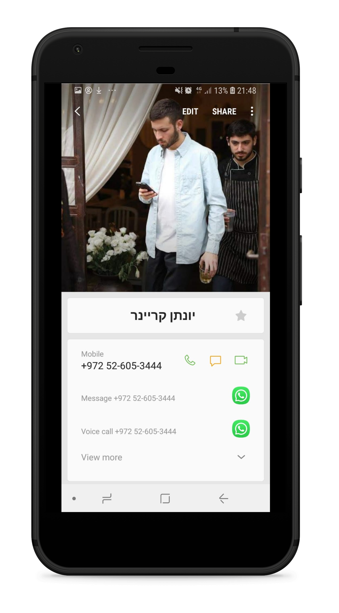

Step 1
Open WhatsApp on your phone. Click on the options menu (3 dots on top), and choose "WhatsApp Web" option.Scan the QR code on this website.
Step 2
Click the import button below the QR code and connect with your Google account.Allow WhatsAppSync to access your Google contacts by clicking authorize after authenticating to Google.
